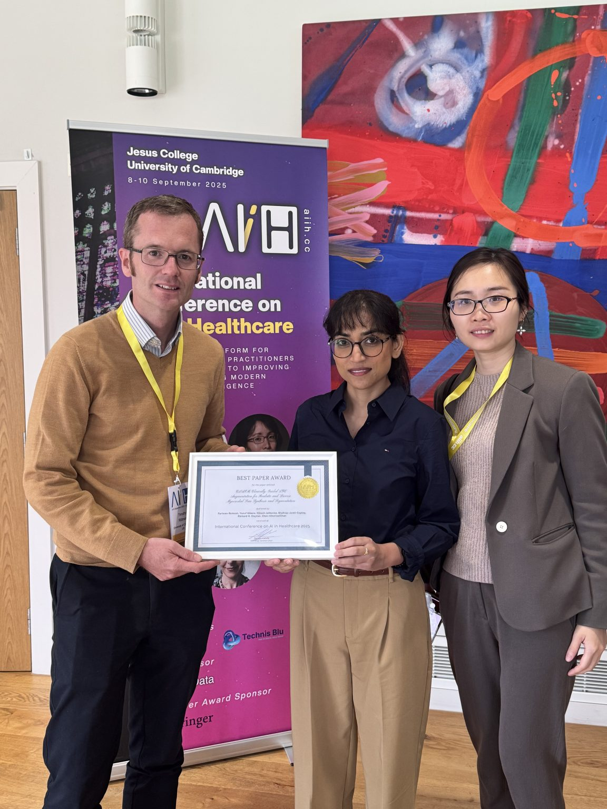
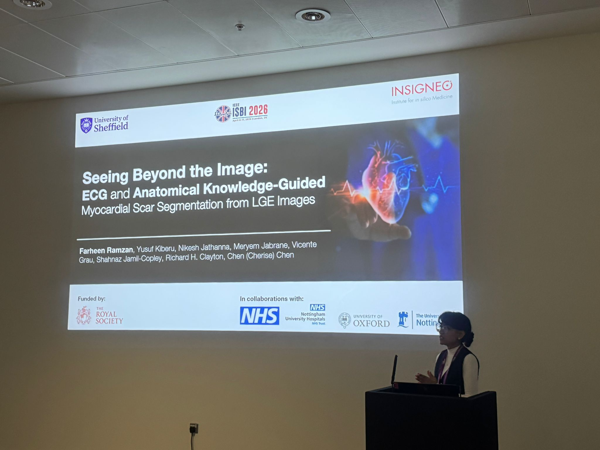
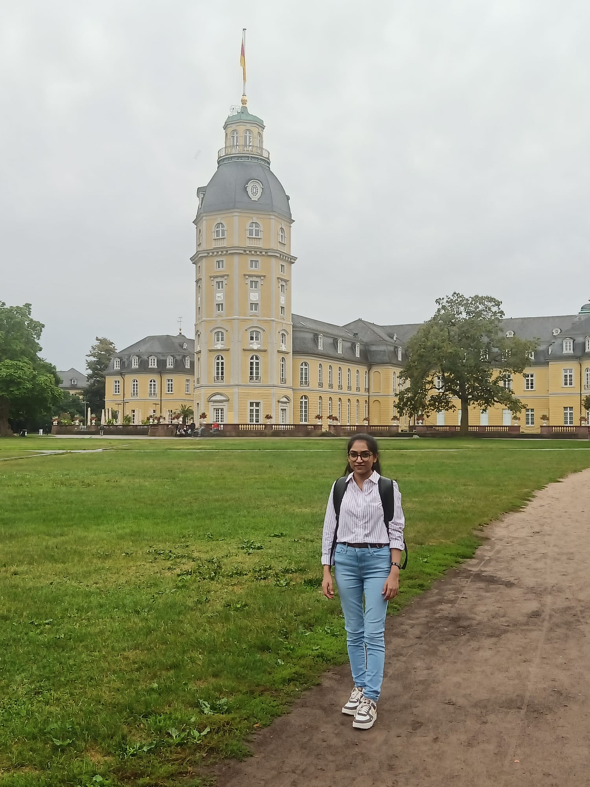
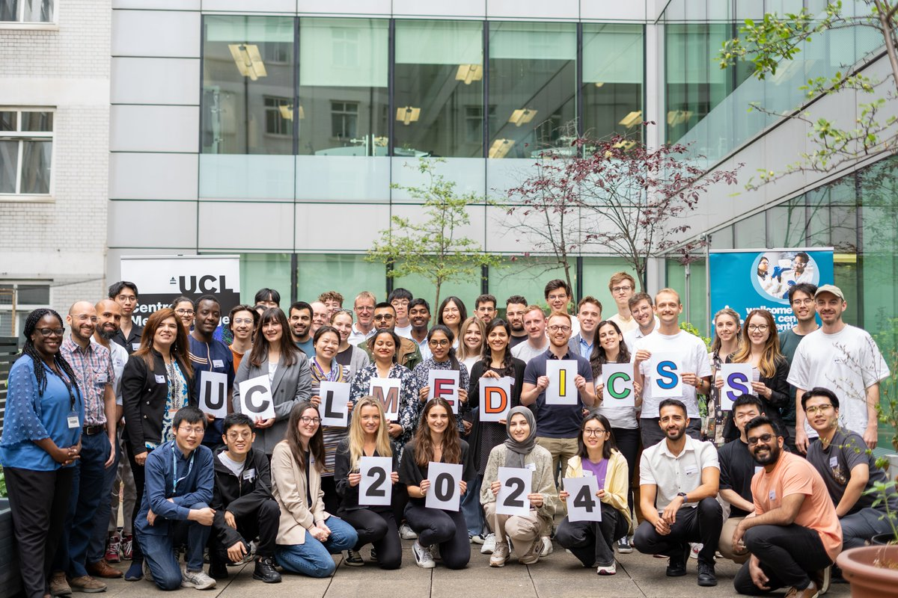
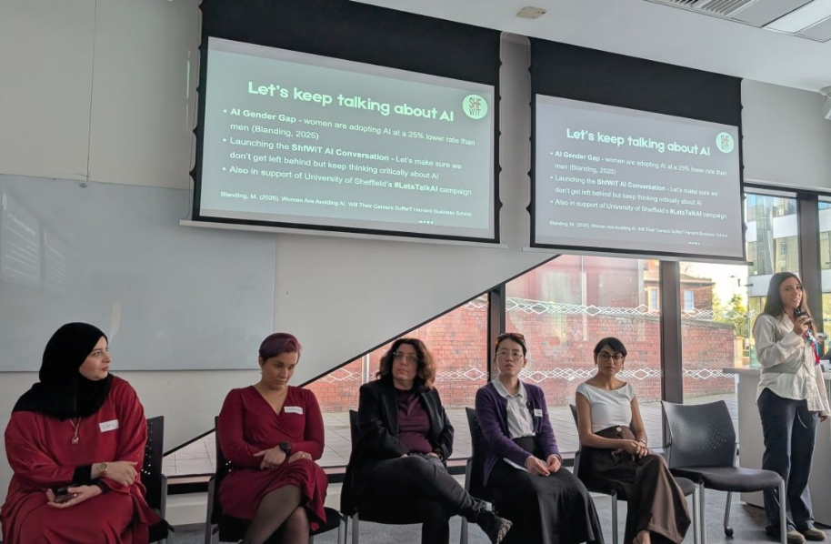
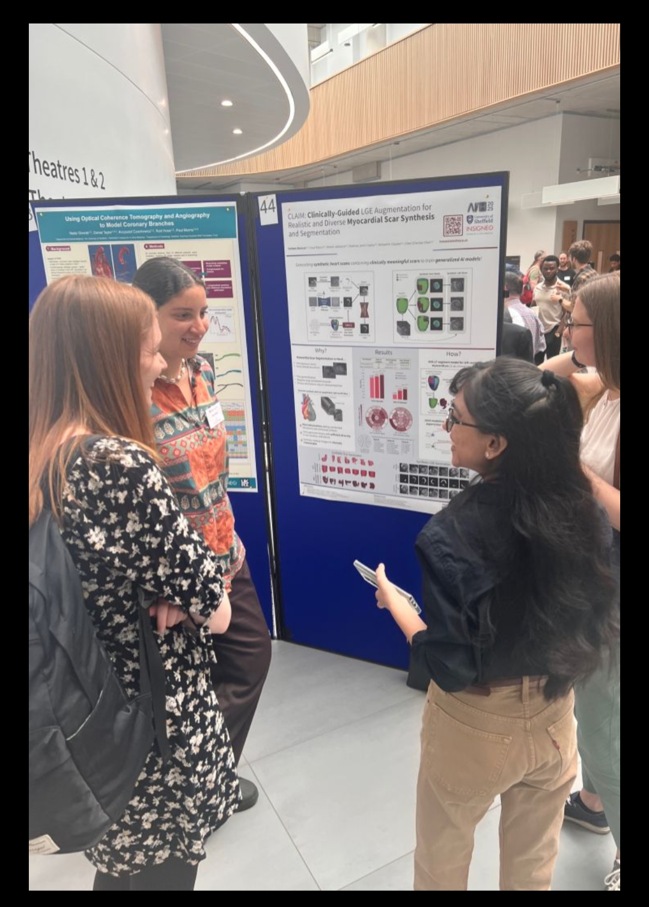
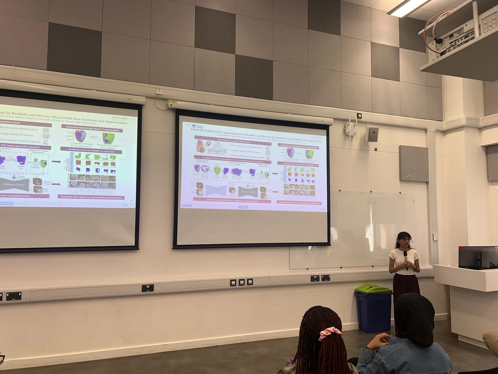
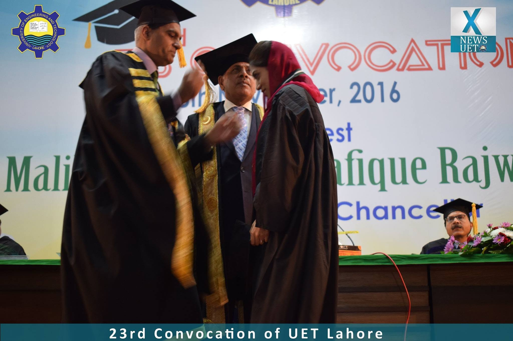

Events & Conferences

AIiH 2025 · Cambridge · Best Paper Award

IEEE ISBI 2026 · London · Oral

CinC 2024 · Karlsruhe, Germany

MedICSS · UCL London · 2024

UK Multimodal AI Workshop · Barbican, London · 2025

Viva passed · University of Sheffield · 2026

AI Panelist · Sheffield Women in Technology · 2026

Poster Presentation · UK Multimodal AI Workshop · Barbican, London · 2025

Poster Presentation · Insigneo Showcase · University of Sheffield · 2025

Oral Presentation · Engineering Researcher Symposium · University of Sheffield · 2025

Gold Medal · 23rd Convocation · UET Lahore · 2016